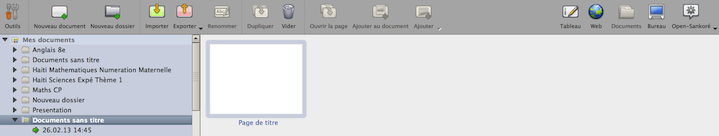

Dans un souci de simplification, Open-Sankoré enregistre automatiquement votre travail à chaque changement de page.
Un nouveau document est donc créé à chaque ouverture du logiciel. Ce dernier figure dans le dossier "Documents sans titre" du mode "Documents".

Dans ce mode, il vous est notamment possible de :